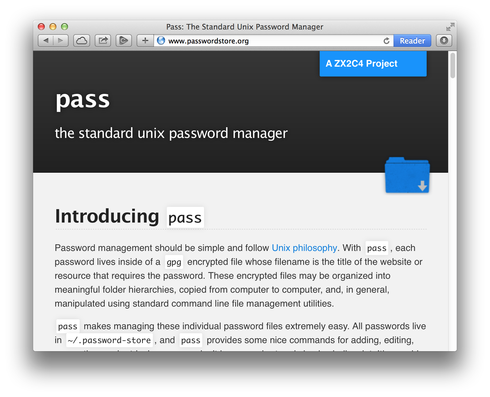
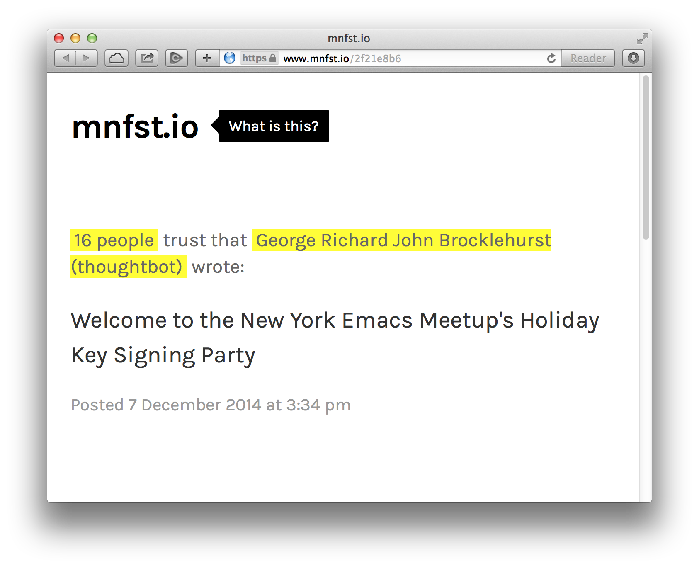

<!DOCTYPE html>
<html lang='en-GB'>
  <head>
    <meta charset='utf-8'>
    <title>A pretty good introduction to PGP</title>
    <link rel='stylesheet' href='../stylesheets/slides.css'>
  </head>
  <body>
    <div class='slide'>
      <h1>
        A pretty good introduction to
        Pretty Good Privacy
      </h1>
      <p>
        <span class='notes'>by</span>
        <strong class='vcard'>
          <a href='http://georgebrock.com' class='fn url'>
            George Brocklehurst</a>
        </strong>
        (@georgebrock)
      </p>
      <p></p>
      <p class='notes'>
        Presented at
        <strong class='vevent'>
          <a href='http://www.meetup.com/New-York-Emacs-Meetup/events/213407312/' class='summary url'>New York Emacs Meetup</a>,
          <time class='dtstart' datetime='2014-12-08'>8th December 2014</time>
        </strong>
      </p>
    </div>

    <nav class='notes'>
      <h2>In this talk</h2>
      <ol class='plain reveal'>
        <li><a href='#what-is-it'>What is it?</a></li>
        <li><a href='#why-should-i-care'>Why should I care?</a></li>
        <li><a href='#the-chicken-or-the-egg'>The chicken, or the egg?</a></li>
        <li><a href='#how-do-i-use-it'>How do I use it?</a></li>
      </ol>
    </nav>

    <div class='slide' id='what-is-it'>
      <h2>What is it?</h2>
    </div>

    <div class='slide'>
      <h3>Public key cryptography</h3>
    </div>

    <ul class='notes'>
      <li>PGP uses <a href='http://en.wikipedia.org/wiki/Public-key_cryptography'>public key cryptography</a>.</li>
      <li>Users generate a <dfn>key pair</dfn>, consisting of a <dfn>private key</dfn> and a <dfn>public key</dfn>.</li>
      <li>The private key is kept private, while the public key is distributed on the Internet.</li>
      <li>The keys are linked: a document encrypted with one half of a key pair can only be decrypted with the other half.</li>
    </ul>

    <div class='slide'>
      <h3>Encryption</h3>
    </div>

    <p class='notes'>
      The first useful function PGP provides is <dfn>encryption</dfn>: if I have a user's public key, then I can encrypt a document so that only they can decrypt it.
    </p>

    <div class='slide'>
      <ol class='diagram'>
        <li><code>Hello world</code></li>
        <li><span>PGP encryption program<br>+<br>public key</span></li>
        <li><code>hQEMA6hE0W3mZqcpAQf9Hyui&hellip;</code></li>
        <li><span>PGP decryption program<br>+<br>private key</span></li>
        <li><code>Hello world</code></li>
      </ol>
    </div>

    <div class='slide'>
      <h3>Signing</h3>
    </div>

    <div class='notes'>
      <p>
        The second useful function PGP provides is <dfn>signing</dfn>: I can sign a message or document using my private key, and anyone with my public key  can verify the signature.
      </p>

      <p>
        A verified signature means two things:
      </p>

      <ol>
        <li>The signature was made using my private key, and</li>
        <li>the document has not been modified since it was signed.</li>
      </ol>
    </div>

    <div class='slide'>
      <ol class='diagram'>
        <li><code>Hello world</code></li>
        <li><span>PGP signing program<br>+<br>private key</span></li>
        <li><code>Hello world</code><br>+<br><code>iQEcBAEBAgAGBQJUhI/q&hellip;</code></li>
        <li><span>PGP verification program<br>+<br>public key</span></li>
        <li><code>Hello world</code><br>+<br><code>Verified</code></li>
      </ol>
    </div>

    <div class='notes'>
      <p>Behind the scenes, signatures use encryption:</p>

      <ol>
        <li>The signer generates a digest (e.g. SHA1) of the document</li>
        <li>The digest is encrypted using the signer's private key, producing the signature</li>
        <li>The verifier decrypts the signature using the signer's public key</li>
        <li>The verifier generate a digest of the document and compares it to the decrypted signature</li>
        <li>If the digests match, the signature is verified</li>
      </ol>
    </div>

    <div class='slide' id='why-should-i-care'>
      <h2>Why should I care?</h2>
    </div>

    <div class='notes'>
      <p>
        In other words: what practical uses do <strong>encryption</strong> and <strong>signing</strong> have in your every day interactions with computers?
      </p>
    </div>

    <div class='slide'>
      <h3>Email security</h3>
    </div>

    <div class='notes'>
      <ul>
        <li>Encrypted email is a secure way to send secret information over the Internet, e.g. a password.</li>
        <li>Signed email allows you to verify the content of an email hasn't been tampered with, and who sent it.</li>
      </ul>
    </div>

    <div class='slide'>
      <h3>Signed Git commits</h3>
    </div>

    <div class='notes'>
      <ul>
        <li>Git makes it very easy to commit under another user's name (this is a feature, not a bug).</li>
        <li>Signing commits makes it difficult for someone to sneak malicious code into your Git repository.</li>
        <li>Git servers can be compromised, e.g. <a href='http://homakov.blogspot.com/2012/03/how-to.html'>Egor Homokov hacked GitHub</a>.</li>
        <li>For more information, read <a href='http://mikegerwitz.com/papers/git-horror-story'>Mike Gerwitz's "Git Horror Story"</a></li>
      </ul>
    </div>

    <div class='slide'>
      <h3>Encrypted files</h3>
    </div>

    <div class='notes'>
      <ul>
        <li>As well as using PGP to send other people encrypted messages and files, you can use your own public key to encrypt files for your own use.</li>
        <li>Many PGP users store private information—things like passwords—in PGP encrypted files on their hard drive.</li>
      </ul>
    </div>

    <figure class='slide'>
      <a href='http://www.passwordstore.org/'>
        
      </a>
      <figcaption class='notes'>passwordstore.org: the standard unix password manager</figcaption>
    </figure>

    <div class='notes'>
      <ul>
        <li>The <code>pass</code> command-line utility provides convenient tools for storing your passwords in PGP encrypted files.</li>
      </ul>
    </div>

    <div class='slide'>
      <h3>Verifiable downloads</h3>
    </div>

    <div class='notes'>
      <ul>
        <li>Verifying the SHA1 of MD5 of a download only goes so far: if the Web site hosting a download is compromised, the digest could have been substituted as well as the download.</li>
        <li>Verifying a download using a PGP signature is safer: if you know which key you expect to have created the signature, you can verify that the signature has not been tampered with.</li>
        <li>The Debian apt repository does this for you automatically.</li>
      </ul>
    </div>

    <div class='slide'>
      <h3>Web sites without passwords</h3>
    </div>

    <div class='notes'>
      <ul>
        <li>Logging in to a Web site involves sending your identifying information—a username and password—over the network. Anyone who intercepts that message can impersonate you.</li>
        <li>Sending signed data is safer. The Web site can verify that the data comes from you without you having to send anything that can be used to impersonate you.</li>
        <li>Still experimental, but this demonstrates the power of PGP signatures as a general purpose identify verification mechanism.</li>
      </ul>
    </div>

    <figure class='slide'>
      <a href='https://www.mnfst.io/2f21e8b6'>
        
      </a>
      <figcaption class='notes'>mnfst.io: A password-less Web site built with PGP</figcaption>
    </figure>

    <div class='slide' id='the-chicken-or-the-egg'>
      <h2>The chicken, or the egg?</h2>
    </div>

    <div class='notes'>
      <p>
        There's a problem with all of this, though: to send someone an encypted message, or verify their signed message, I need to know that I have their public key. Unfortunately, since I don't have their public key yet, I don't have a verifiable way to get their public key from them.
      </p>

      <p>PGP provides a solution to this problem.</p>
    </div>

    <div class='slide'>
      <h3>The Web of Trust</h3>
    </div>

    <div class='notes'>
      <ul>
        <li>The Web of Trust allows users to act as trusted introducers: if Ann trusts Brian, and Brian trusts Charlotte, then Ann can trust Charlotte to some degree.</li>
        <li>Trusting a PGP user is indicated by signing their public key with their private key, after checking that they are who they say they are, and that you have the public key that they claim to own.</li>
        <li>You can also indicate a trust level for users: if someone is <dfn>fully trusted</dfn> then their signature is enough to trust the keys they have signed, but if they are only <dfn>marginally trusted</dfn> then several other users have to agree before you trust the keys they have signed.</li>
        <li><a href='http://www.staff.science.uu.nl/~penni101/henkp/pgp/'>Henk Penning has published some interesting tools for exploring the Web of Trust</a>.</li>
      </ul>
    </div>

    <div class='slide' id='how-do-i-use-it'>
      <h2>How do I use it?</h2>
    </div>

    <div class='slide'>
      <h3>PGP, OpenPGP &amp; GnuPG</h3>
    </div>

    <div class='notes'>
      <ul>
        <li>PGP is the original program, written by Phil Zimmerman. It is free-as-in-beer, but not free-as-in-Stallman.</li>
        <li><a href='http://www.openpgp.org/'>OpenPGP</a> is the standard derived from PGP. PGP is now just one of several implementations of OpenPGP.</li>
        <li><a href='https://www.gnupg.org/'>GnuPG</a> is the Gnu project's free-as-in-Stallman implementation of OpenPGP. Since this talk is at an Emacs meetup, and this is the implementation I tend to use, this is the one I will demonstrate.</li>
      </ul>
    </div>

    <div class='slide' id='how-do-i-use-it'>
      <h2>GnuPG demo</h2>
    </div>

    <div class='notes'>
      <p>To follow these examples, you will need to have <code>gpg2</code> installed.</p>

      <h3>Generating a key</h3>

      <pre class='interactive'><samp class='prompt'>$ </samp><kbd>gpg2 --gen-key</kbd>
<samp>gpg (GnuPG) 2.0.26; Copyright (C) 2013 Free Software Foundation, Inc.
This is free software: you are free to change and redistribute it.
There is NO WARRANTY, to the extent permitted by law.

Please select what kind of key you want:
   (1) RSA and RSA (default)
   (2) DSA and Elgamal
   (3) DSA (sign only)
   (4) RSA (sign only)
Your selection?</samp></pre>

      <p>You probably want to stick with the default here: just hit <kbd><kbd>return</kbd></kbd></p>

      <pre class='interactive'><samp>RSA keys may be between 1024 and 4096 bits long.
What keysize do you want? (2048)</samp></pre>

      <p>The key size is a balance between a large, secure key, and small, easily transmitted signatures and encrypted documents. Again, if you don't have a strong preference the default is probably fine.</p>

      <pre class='interactive'><samp>Please specify how long the key should be valid.
         0 = key does not expire
      <n>  = key expires in n days
      <n>w = key expires in n weeks
      <n>m = key expires in n months
      <n>y = key expires in n years
Key is valid for? (0) </samp><kbd>2y</kbd>
<samp>Key expires at Wed Dec  7 23:38:11 2016 EST
Is this correct? (y/N) </samp><kbd>y</kbd></pre>

      <p>In this case, it's useful not to follow the default. If you lose your private key for any reason, the the public key could live forever, inviting people to send you encrypted messages you can never decrypt. If the key expires, this problem will go away on its own in time, and you can always extend the expiry date if you still have the private key.</p>

      <pre class='interactive'><samp>GnuPG needs to construct a user ID to identify your key.

Real name: </samp><kbd>Testy McTest</kbd>
<samp>Email address: </samp><kbd>test@example.com</kbd>
<samp>Comment: </samp><kbd></kbd>
<samp>You selected this USER-ID:
    "Testy McTest &lt;test@example.com&gt;"

Change (N)ame, (C)omment, (E)mail or (O)kay/(Q)uit? </samp><kbd>o</kbd></pre>

      <p>After entering your identifiable information, you will be prompted for a <dfn>passphrase</dfn>. You should pick something longer than a password.</p>

      <p>After that, you may need to use your computer for a while for GPG to collect enough random data to generate they key. Just move your mouse a lot; it will finish eventually.</p>

      <p>The final output you will see contains your key ID:</p>

      <pre class='interactive'><samp>pub   2048R/12C595E9 2014-12-09 [expires: 2016-12-08]
      Key fingerprint = 6105 5591 CD4B 6D5A 4142  AC0C D387 8005 12C5 95E9
uid       [ultimate] Testy McTest <test@example.com>
sub   2048R/CE1346C0 2014-12-09 [expires: 2016-12-08]</samp></pre>

      <p>In this case the key ID is <code>12C595E9</code>. We can use that key ID to publish the newly generated public key to a public key server:</p>

      <pre class='interactive'><samp class='prompt'>$ </samp><kbd>gpg2 --send-key 12C595E9</kbd></pre>

      <p>Since this is just a demonstration, I won't really be publishing this key.</p>

      <h3>Finding and signing a key</h3>

      <p>Before you sign someone's key, you should verify their identity as best you can. Once you're confident you know who you're talking to, you can download their public key. In this case, I want to sign Harry's key:</p>

      <pre class='interactive'><samp class='prompt'>$ </samp><kbd>gpg2 --search harry@thoughtbot.com</kbd>
<samp>gpg: searching for "harry@thoughtbot.com" from hkp server keys.gnupg.net
(1)     Harry R. Schwartz &lt;harry@thoughtbot.com&gt;
        Harry R. Schwartz &lt;hello@harryrschwartz.com&gt;
          4096 bit RSA key 25AE721B, created: 2014-01-30
          Keys 1-1 of 1 for "harry@thoughtbot.com".  Enter number(s), N)ext, or Q)uit &gt; </samp><kbd>1</kbd>
<samp>gpg: requesting key 25AE721B from hkp server keys.gnupg.net
gpg: key 25AE721B: "Harry R. Schwartz &lt;harry@thoughtbot.com&gt;"</samp></pre>

      <p>Now that I have the key, I can sign it. Using the <code>--ask-cert-level</code> flag lets me specify the level of certainty I have in signing this key. The first thing I want to do is verify that I have the right key:</p>

      <pre class='interactive'><samp class='prompt'>$ </samp><kbd>gpg2 --ask-cert-level --edit-key harry@thoughtbot.com</kbd>
<samp class='prompt'>gpg&gt; </samp><kbd>fpr</kbd>
<samp>pub   4096R/25AE721B 2014-01-30 Harry R. Schwartz <harry@thoughtbot.com>
 Primary key fingerprint: 1B41 8F2C 23DE DD9C 807E  A74F 841B 3DAE 25AE 721B</samp>
<samp class='prompt'>gpg&gt; </samp></pre>

      <p>At this point I should stop and check that the fingerprint I have in front of me matches the one that Harry gave me when he told me which key is his. When I'm sure they match, I can move on to signing the key.</p>

      <pre class='interactive'><samp class='prompt'>gpg&gt; </samp><kbd>sign</kbd>
<samp>Really sign all user IDs? (y/N) </samp><kbd>y</kbd></pre>

      <p>GPG will now prompt you for your passphrase, and sign the keys. Finish the process by saving the signature, and pushing the key you just signed up to a key server:</p>

      <pre class='interactive'><samp class='prompt'>gpg&gt; </samp><kbd>save</kbd>
<samp class='prompt'>$ </samp><kbd>gpg2 --send-key 25AE721B</kbd></pre>
    </div>

    <div class='questions slide'>
      <h2>Any questions?</h2>
      <p>
        <span class='notes'>Ask now, or later:</span>
        <b><a href='http://twitter.com/georgebrock'>@georgebrock</a></b>
        <span class='notes'>on Twitter or email</span>
        <b><a href='mailto:george@thoughtbot.com'>george@thoughtbot.com</a></b>
        <span class='notes'>using</span>
      </p>

      <p>
        PGP key fingerprint
        <code>0750 F6BF 8064 E22C 68D2<br>3D90 0C64 3A97 B51F FCFB</code>
      </p>
    </div>

    <script src='../javascripts/jquery.min.js'></script>
    <script src='../javascripts/slides.js'></script>
  </body>
</html>
